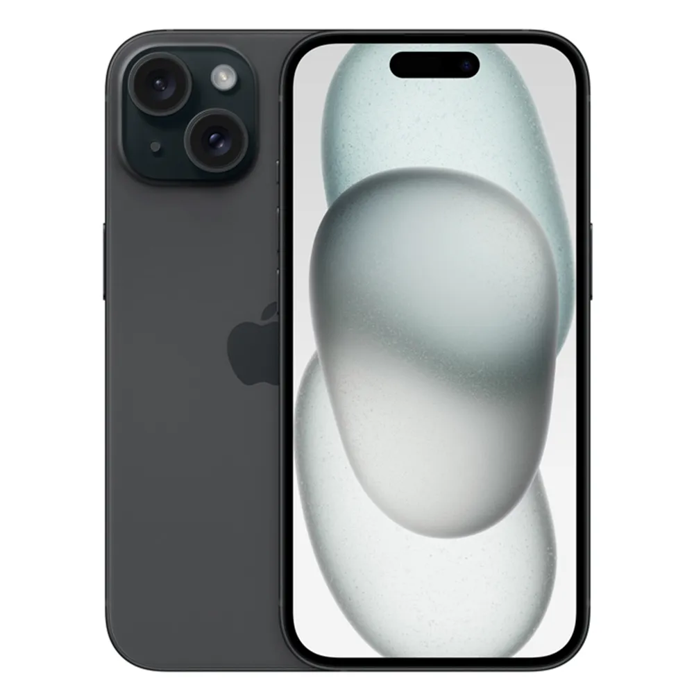

Iphone 15
O iPhone 15 representa uma evolução marcante na linha da Apple, combinando design refinado, desempenho poderoso e recursos inteligentes. Ele possui acabamento em alumínio e vidro colorido em tons vibrantes, além da Dynamic Island, que substitui o antigo notch e torna a experiência mais interativa e fluida. A tela Super Retina XDR de 6,1 polegadas oferece cores precisas, brilho intenso e ótima visibilidade sob luz solar. Equipado com o chip A16 Bionic, o mesmo usado no iPhone 14 Pro, o aparelho entrega alto desempenho e eficiência energética, ideal para jogos, multitarefas e fotografia avançada. A nova câmera principal de 48 megapixels permite fotos mais detalhadas e retratos nítidos, mesmo em baixa luz. O modo retrato foi aprimorado, e agora o foco pode ser ajustado após a captura. Outra grande novidade é a porta USB-C, que substitui o Lightning, garantindo carregamento e transferência de dados mais rápidos. Com recursos como 5G, MagSafe, iOS 17 e bateria otimizada, o iPhone 15 oferece uma experiência completa, moderna e alinhada ao padrão de excelência da Apple.
Preço: R$ 6.499,99
S24 Ultra

Equipado com o processador Snapdragon 8 Gen 3, o S24 Ultra garante velocidade e eficiência energética, ideal para multitarefas e jogos pesados. Sua tela Dynamic AMOLED 2X de 6,8 polegadas com resolução QHD+ (3120 x 1440) e taxa de atualização adaptativa de até 120 Hz proporciona uma experiência visual fluida e vibrante, mesmo sob luz intensa No setor fotográfico, o dispositivo se destaca com um sistema de câmeras quádruplas: uma lente principal de 200 MP, uma telefoto de 50 MP com zoom óptico de 5x, uma telefoto de 10 MP com zoom de 3x e uma ultra-angular de 12 MP. Isso permite capturar imagens detalhadas e vídeos em alta resolução, incluindo gravação em 8K a 30 fps O design em titânio oferece durabilidade e um toque premium, enquanto a S Pen integrada proporciona produtividade adicional. A bateria de 5.000 mAh suporta uso intenso ao longo do dia, e o dispositivo recebe atualizações de software garantidas por sete anos
Preço: R$ 6.999,99
Redmi note 14 pro
O Xiaomi Redmi Note 14 Pro é um smartphone de alto desempenho que combina design elegante com especificações robustas, oferecendo uma experiência premium na faixa intermediária.Equipado com o processador MediaTek Dimensity 7300-Ultra de 6nm, o dispositivo garante desempenho eficiente e fluido para multitarefas e jogos exigentes. A tela AMOLED curva de 6,67 polegadas, com resolução de 2712 x 1220 pixels e taxa de atualização de 120 Hz, proporciona imagens vibrantes e transições suaves, além de suporte a HDR10+ e Dolby Vision para uma experiência visual imersiva.No setor fotográfico, o Redmi Note 14 Pro se destaca com uma câmera principal de 200 MP, acompanhada de sensores adicionais para ultrawide e macro, permitindo capturar imagens detalhadas e vídeos de alta qualidade. A estabilização óptica de imagem (OIS) aprimora a nitidez das fotos, especialmente em condições de pouca luz.